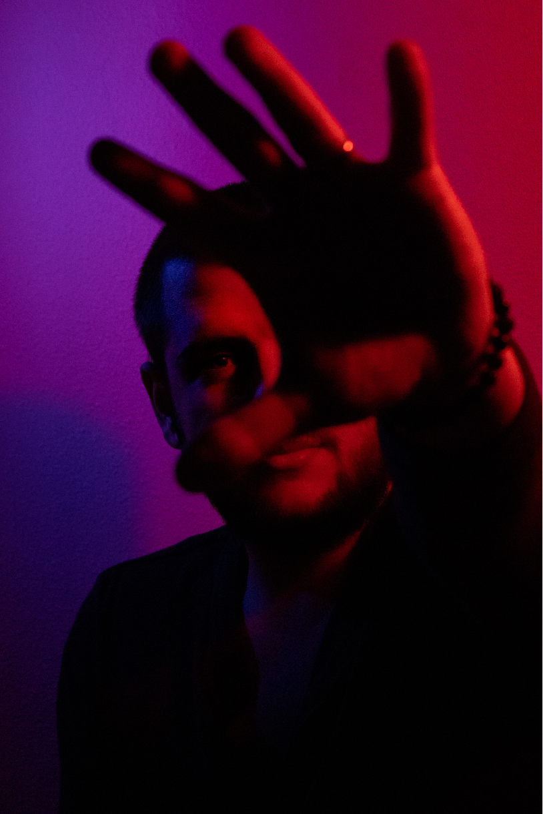
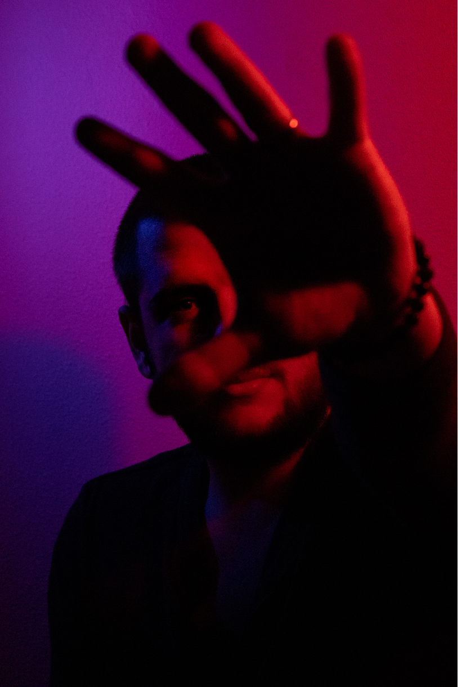

photo graphy
I've always loved taking pictures of people, landscapes and animals because photos are something that stays forever with you, even if the people or animals leave. However as it is said, owning a camera doesn't make you a photographer. I got a camera but all I knew was taking pictures with the automatic mode. Despite achieving okay-is results, I wasn’t satisfied with them only because I couldn’t operate the camera to its full potential.
During the minor we had a lecture about Photography with a lecturer who was a photographer themselves. In this lecture we could see many examples and leaned the basics of photography such as ISO, shutter speed and the aperture. Most importantly, it was very well explained how they work together. This inspired my to sign up for a full course of Photography from mid-April to mid-May. This course explained additional things such as the history of photography, creative uses of lightning, lenses, rules for taking a portrait and others.
As a result, I shot about one thousand photos just for the month of May. Thankfully, the models - my boyfriend Teodor and my hamster, loved being in front of the camera.
 
